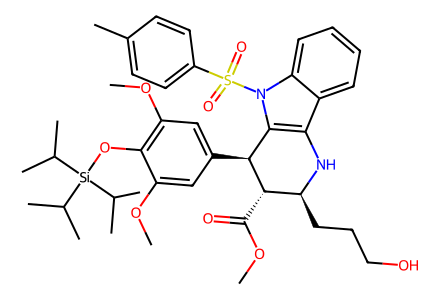
COC(=O)[C@@H]1[C@@H](c2cc(OC)c(O[Si](C(C)C)(C(C)C)C(C)C)c(OC)c2)c2c(c3ccccc3n2S(=O)(=O)c2ccc(C)cc2)N[C@H]1CCCO26 个分子记录、14 个制备事件、23 个操作记录、7 条路径。仅编码源图相对构型；未分离中间体、原文笔误和未合成的修订结构已区分，待独立专家复核。
完整 JSON · 逐步 CSV · 路线序列 · SDF · HRMS 核对
| 事件 | 分子连接 | 报告产率 | Canonical reaction SMILES |
|---|---|---|---|
| E01 | 13 + benzyl-alcohol → 10 | 10: 10% | O=C(O)c1c[nH]c2ccccc12.OCc1ccccc1>>Nc1c[nH]c2ccccc12 |
| E02 | 13-prime + benzyl-alcohol → 10-prime | 10-prime: 57% | Cc1ccc(S(=O)(=O)n2cc(C(=O)O)c3ccccc32)cc1.OCc1ccccc1>>Cc1ccc(S(=O)(=O)n2cc(N)c3ccccc32)cc1 |
| E03 | butanediol + TIPSCl → S7 | S7: 97% | CC(C)[Si](Cl)(C(C)C)C(C)C.OCCCCO>>CC(C)[Si](OCCCCO)(C(C)C)C(C)C |
| E04 | S7 → 11 | 11: 62% | CC(C)[Si](OCCCCO)(C(C)C)C(C)C>>CC(C)[Si](OCCCC=O)(C(C)C)C(C)C |
| E05 | sinapic-acid + methanol + TIPSCl → 12 | 12: 89% | CC(C)[Si](Cl)(C(C)C)C(C)C.CO.COc1cc(/C=C/C(=O)O)cc(OC)c1O>>COC(=O)/C=C/c1cc(OC)c(O[Si](C(C)C)(C(C)C)C(C)C)c(OC)c1 |
| E06 | 10-prime + 11 + 12 → 16 | 16: 43% | CC(C)[Si](OCCCC=O)(C(C)C)C(C)C.COC(=O)/C=C/c1cc(OC)c(O[Si](C(C)C)(C(C)C)C(C)C)c(OC)c1.Cc1ccc(S(=O)(=O)n2cc(N)c3ccccc32)cc1>>COC(=O)[C@@H]1[C@@H](c2cc(OC)c(O[Si](C(C)C)(C(C)C)C(C)C)c(OC)c2)c2c(c3ccccc3n2S(=O)(=O)c2ccc(C)cc2)N[C@H]1CCCO |
| E07 | 16 → 17 | 17: 52% | COC(=O)[C@@H]1[C@@H](c2cc(OC)c(O[Si](C(C)C)(C(C)C)C(C)C)c(OC)c2)c2c(c3ccccc3n2S(=O)(=O)c2ccc(C)cc2)N[C@H]1CCCO>>COC(=O)[C@@H]1[C@@H](c2cc(OC)c(O[Si](C(C)C)(C(C)C)C(C)C)c(OC)c2)c2c(c3ccccc3n2S(=O)(=O)c2ccc(C)cc2)N2CCC[C@@H]12 |
| E08 | 10-prime + 18 + 12 → 17 | 17: 71% | BrCCCC1OCCO1.COC(=O)/C=C/c1cc(OC)c(O[Si](C(C)C)(C(C)C)C(C)C)c(OC)c1.Cc1ccc(S(=O)(=O)n2cc(N)c3ccccc32)cc1>>COC(=O)[C@@H]1[C@@H](c2cc(OC)c(O[Si](C(C)C)(C(C)C)C(C)C)c(OC)c2)c2c(c3ccccc3n2S(=O)(=O)c2ccc(C)cc2)N2CCC[C@@H]12 |
| E09 | 17 → 21 | 21: 62% | COC(=O)[C@@H]1[C@@H](c2cc(OC)c(O[Si](C(C)C)(C(C)C)C(C)C)c(OC)c2)c2c(c3ccccc3n2S(=O)(=O)c2ccc(C)cc2)N2CCC[C@@H]12>>COC(=O)[C@@H]1[C@@H](c2cc(OC)c(O[Si](C(C)C)(C(C)C)C(C)C)c(OC)c2)[C@]2(C(=O)N(S(=O)(=O)c3ccc(C)cc3)c3ccccc32)N2CCC[C@@H]12 |
| E10 | 10-prime + 18 + 12 → 21 | 21: 55% | BrCCCC1OCCO1.COC(=O)/C=C/c1cc(OC)c(O[Si](C(C)C)(C(C)C)C(C)C)c(OC)c1.Cc1ccc(S(=O)(=O)n2cc(N)c3ccccc32)cc1>>COC(=O)[C@@H]1[C@@H](c2cc(OC)c(O[Si](C(C)C)(C(C)C)C(C)C)c(OC)c2)[C@]2(C(=O)N(S(=O)(=O)c3ccc(C)cc3)c3ccccc32)N2CCC[C@@H]12 |
| E11 | 21 → 22 | 22: 86% | COC(=O)[C@@H]1[C@@H](c2cc(OC)c(O[Si](C(C)C)(C(C)C)C(C)C)c(OC)c2)[C@]2(C(=O)N(S(=O)(=O)c3ccc(C)cc3)c3ccccc32)N2CCC[C@@H]12>>COC(=O)[C@@H]1[C@@H](c2cc(OC)c(O)c(OC)c2)[C@]2(C(=O)N(S(=O)(=O)c3ccc(C)cc3)c3ccccc32)N2CCC[C@@H]12 |
| E12 | 21 → 23 | 23: 79% | COC(=O)[C@@H]1[C@@H](c2cc(OC)c(O[Si](C(C)C)(C(C)C)C(C)C)c(OC)c2)[C@]2(C(=O)N(S(=O)(=O)c3ccc(C)cc3)c3ccccc32)N2CCC[C@@H]12>>COC(=O)[C@@H]1[C@@H](c2cc(OC)c(O[Si](C(C)C)(C(C)C)C(C)C)c(OC)c2)[C@]2(C(=O)Nc3ccccc32)N2CCC[C@@H]12 |
| E13 | 23 → 4 | 4: 87% | COC(=O)[C@@H]1[C@@H](c2cc(OC)c(O[Si](C(C)C)(C(C)C)C(C)C)c(OC)c2)[C@]2(C(=O)Nc3ccccc32)N2CCC[C@@H]12>>COC(=O)[C@@H]1[C@@H](c2cc(OC)c(O)c(OC)c2)[C@]2(C(=O)Nc3ccccc32)N2CCC[C@@H]12 |
| E14 | 4 → 6 | 6: 61% | COC(=O)[C@@H]1[C@@H](c2cc(OC)c(O)c(OC)c2)[C@]2(C(=O)Nc3ccccc32)N2CCC[C@@H]12>>COC(=O)[C@@H]1[C@@H](c2cc(OC)c(O)c(OC)c2)[C@@]2(ON3CCC[C@@H]13)C(=O)Nc1ccccc12 |

COC(=O)[C@@H]1[C@@H](c2cc(OC)c(O[Si](C(C)C)(C(C)C)C(C)C)c(OC)c2)c2c(c3ccccc3n2S(=O)(=O)c2ccc(C)cc2)N[C@H]1CCCO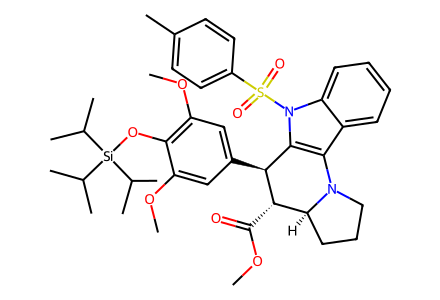
COC(=O)[C@@H]1[C@@H](c2cc(OC)c(O[Si](C(C)C)(C(C)C)C(C)C)c(OC)c2)c2c(c3ccccc3n2S(=O)(=O)c2ccc(C)cc2)N2CCC[C@@H]12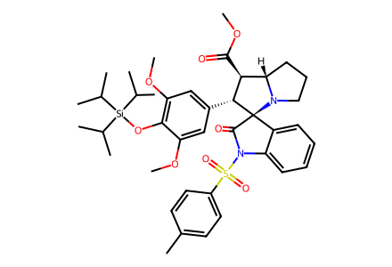
COC(=O)[C@@H]1[C@@H](c2cc(OC)c(O[Si](C(C)C)(C(C)C)C(C)C)c(OC)c2)[C@]2(C(=O)N(S(=O)(=O)c3ccc(C)cc3)c3ccccc32)N2CCC[C@@H]12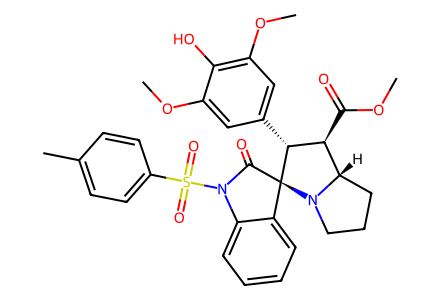
COC(=O)[C@@H]1[C@@H](c2cc(OC)c(O)c(OC)c2)[C@]2(C(=O)N(S(=O)(=O)c3ccc(C)cc3)c3ccccc32)N2CCC[C@@H]12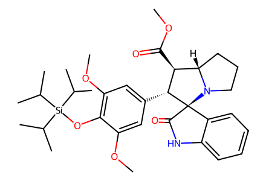
COC(=O)[C@@H]1[C@@H](c2cc(OC)c(O[Si](C(C)C)(C(C)C)C(C)C)c(OC)c2)[C@]2(C(=O)Nc3ccccc32)N2CCC[C@@H]12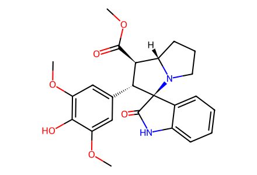
COC(=O)[C@@H]1[C@@H](c2cc(OC)c(O)c(OC)c2)[C@]2(C(=O)Nc3ccccc32)N2CCC[C@@H]12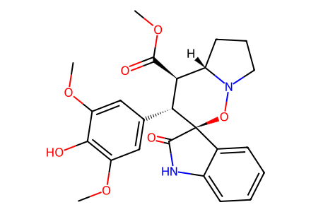
COC(=O)[C@@H]1[C@@H](c2cc(OC)c(O)c(OC)c2)[C@@]2(ON3CCC[C@@H]13)C(=O)Nc1ccccc12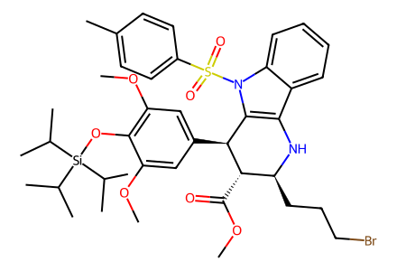
COC(=O)[C@@H]1[C@@H](c2cc(OC)c(O[Si](C(C)C)(C(C)C)C(C)C)c(OC)c2)c2c(c3ccccc3n2S(=O)(=O)c2ccc(C)cc2)N[C@H]1CCCBr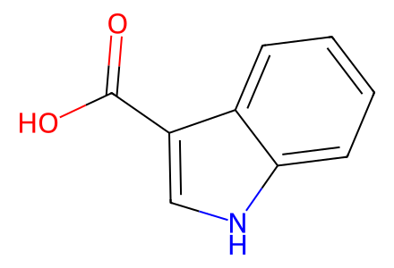
O=C(O)c1c[nH]c2ccccc12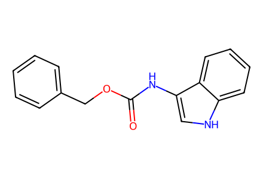
O=C(Nc1c[nH]c2ccccc12)OCc1ccccc1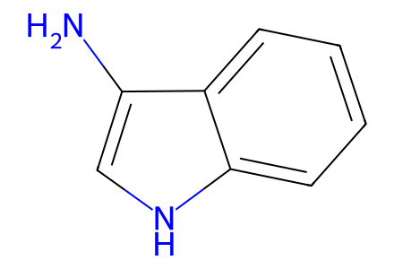
Nc1c[nH]c2ccccc12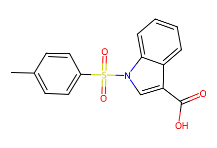
Cc1ccc(S(=O)(=O)n2cc(C(=O)O)c3ccccc32)cc1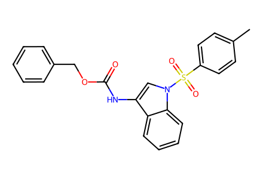
Cc1ccc(S(=O)(=O)n2cc(NC(=O)OCc3ccccc3)c3ccccc32)cc1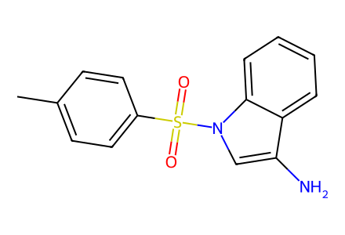
Cc1ccc(S(=O)(=O)n2cc(N)c3ccccc32)cc1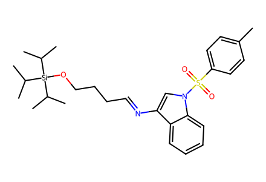
Cc1ccc(S(=O)(=O)n2cc(N=CCCCO[Si](C(C)C)(C(C)C)C(C)C)c3ccccc32)cc1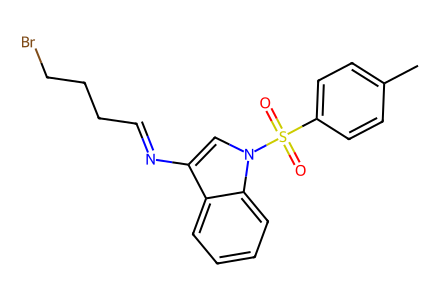
Cc1ccc(S(=O)(=O)n2cc(N=CCCCBr)c3ccccc32)cc1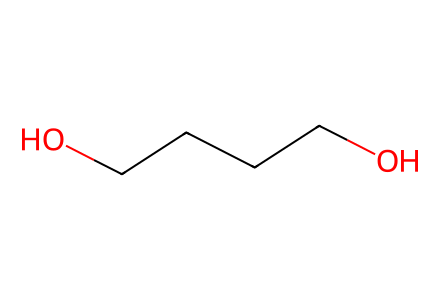
OCCCCO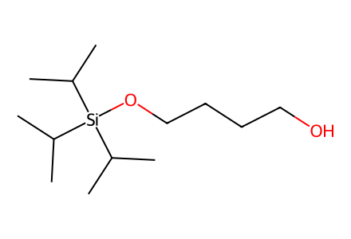
CC(C)[Si](OCCCCO)(C(C)C)C(C)C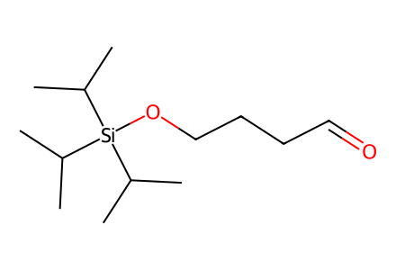
CC(C)[Si](OCCCC=O)(C(C)C)C(C)C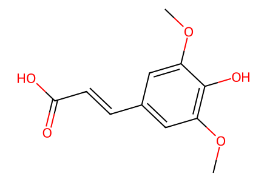
COc1cc(/C=C/C(=O)O)cc(OC)c1O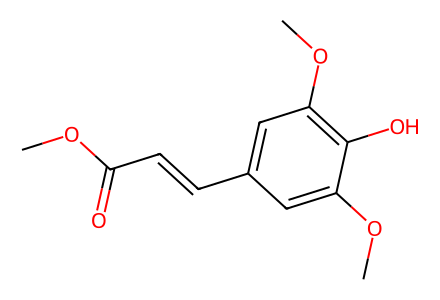
COC(=O)/C=C/c1cc(OC)c(O)c(OC)c1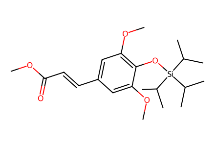
COC(=O)/C=C/c1cc(OC)c(O[Si](C(C)C)(C(C)C)C(C)C)c(OC)c1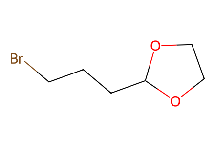
BrCCCC1OCCO1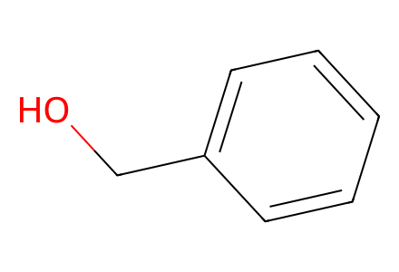
OCc1ccccc1
CO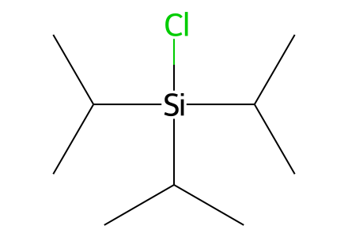
CC(C)[Si](Cl)(C(C)C)C(C)C